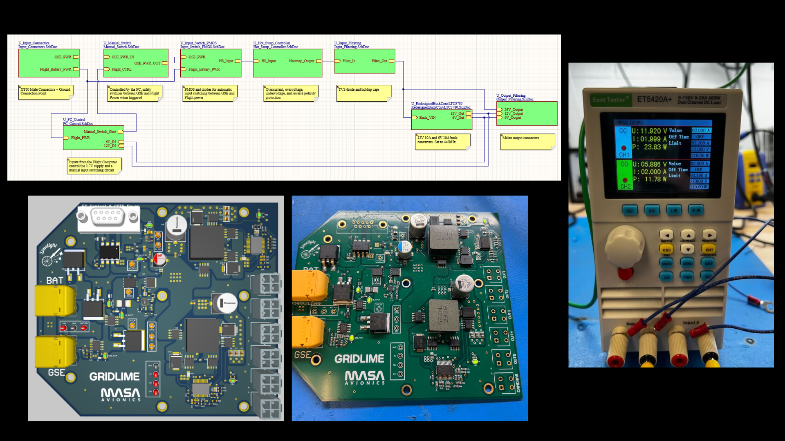

Michigan Aeronautical Science Association (MASA) • Jan 2024 - Present
Context: MASA & Avionics
MASA is the University of Michigan’s premier student-led rocketry club. Our current project is
to launch and recover our most powerful rocket, Limelight, projected to reach an apogee of ~50,000 ft.
We achieved a successful hotfire this summer, firing our Phoenix liquid engine in the Mojave Desert for a clean 22-second burn.
We’re now fabricating Limelight’s main structure and integrating its electrical, plumbing, and ground-support systems. Looking ahead, launch is slated for December 2025.
MASA Avionics is responsible for the conception, fabrication, and programming of all flight-critical electrical systems,
including flight & engine controllers, testing & sensor boards, telemetry systems, and wire harnesses. Avionics works closely with ATLO and other subteams to
develop data-acquisition systems for major test events.
My Role in MASA Avionics !
Power Distribution Lead (Prior): Led the complete design and testing of Limelight’s power distribution board, GridLime.
Scalable Sensor Module for Rocket Avionics (Present): Designing a modular sensor PCB (“Core + Pods”) that supports load cells, accelerometers, and motor sensors and streams time-synced data to Synnax over Ethernet; new sensors plug in via standard headers and a small driver/config.
GridLime, Power Distribution Board:
Overview: Single PCB that routes power from ground-support equipment (GSE) to avionics and performs a seamless switchover to flight batteries at launch, with reverse-polarity, ESD, and transient protection.
Role: Schematics & LayoutBuses: 6 V / 12 V / 24 VUp to 7 PCBs28 V tolerant & RP safe

GridLime: System Block Diagram, PCB renders, fabrication, assembly, and successful bench test with electronic load.
Results
28 V forward input tolerance
28 V reverse-polarity protection
7 downstream boards powered
Seamless GSE → flight battery switchover (no brown-out observed in bench tests).
Stable rails under step loads on electronic load (add ripple/hold-up numbers when available).